The Android launcher that starts with search.
Piko is a tiny, open-source launcher. Type to open an app, call a contact, do the maths, convert a currency or ask your favourite search engine or AI. No ads, no tracking, about 80 KB.
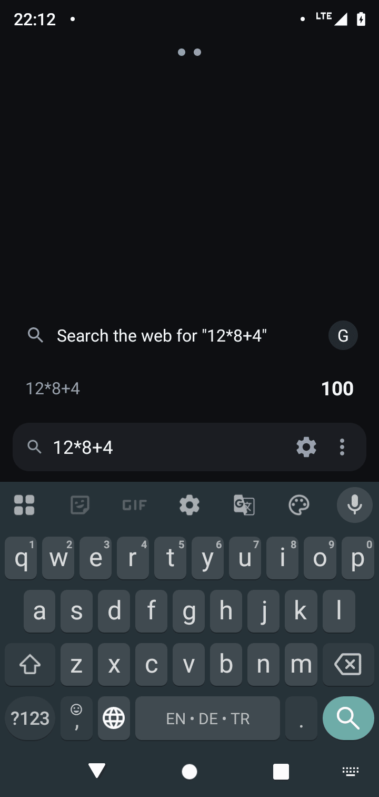
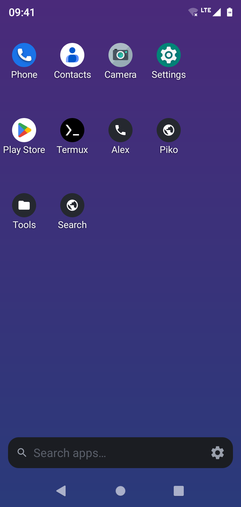
Everything within one search bar
Piko is built around the thing you do most: find something fast.
Search-first
Opens on search. Results learn from your choices and launch history.
Calculator & currency
Type 12*8+4 or 100 usd to eur and get the answer instantly.
Web & AI in one tap
Google, Brave, DuckDuckGo, Bing, ChatGPT, Claude, Perplexity, or any custom URL.
Smart contacts
Search by name or number; call, SMS, WhatsApp message or call per result.
Customise apps
Rename apps, add search tags, set custom icons, and hide what you don't need.
Home grid & widgets
Configurable grid, free-form placement and freely resizable widgets, with a page overview you can reorder by drag and drop.
Shortcuts from any app
Add shortcuts from Chrome and other apps, pin search actions and websites to home, and edit their name, target and icon.
Your background
Solid colour, gradient, system wallpaper or your own image, with adjustable darkening.
Compact results
Contacts expand into colourful action chips, search engines share one row, and calculations keep a history.
Tiny & private
Pure Android SDK. No analytics, ads or trackers. Contacts permission is optional.
Open source
MIT licensed, built and signed by GitHub Actions on every release.
Screenshots
Captured on a Moto G7 Play.
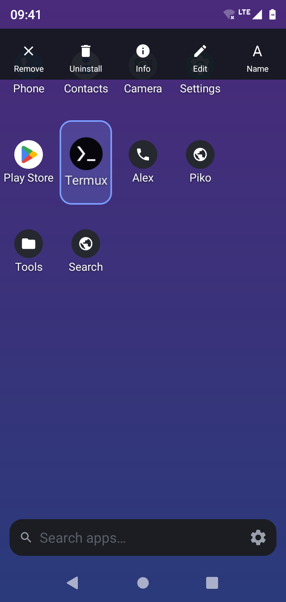
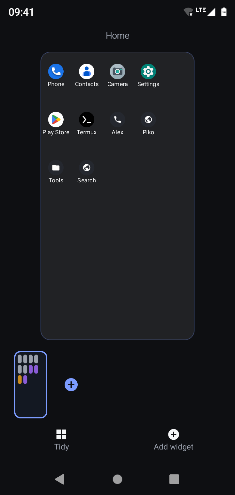
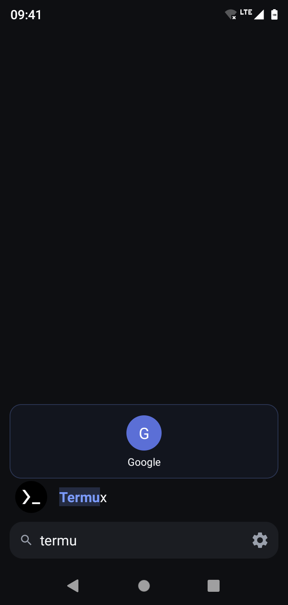
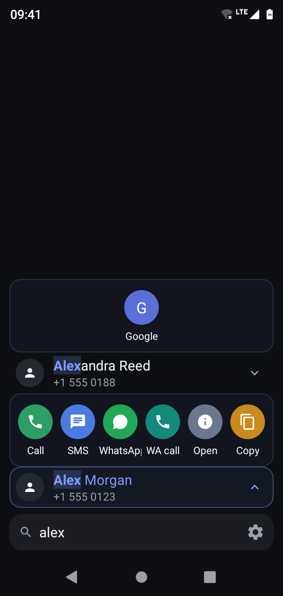
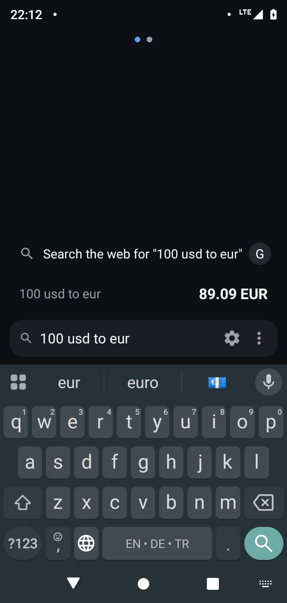
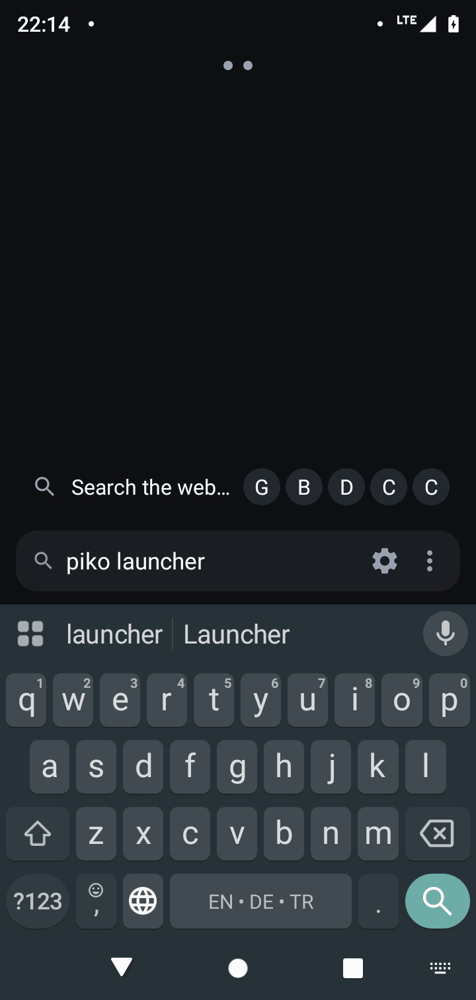
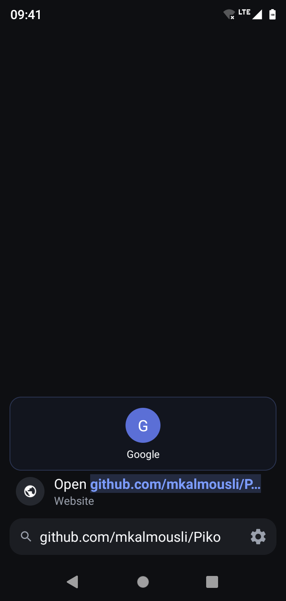
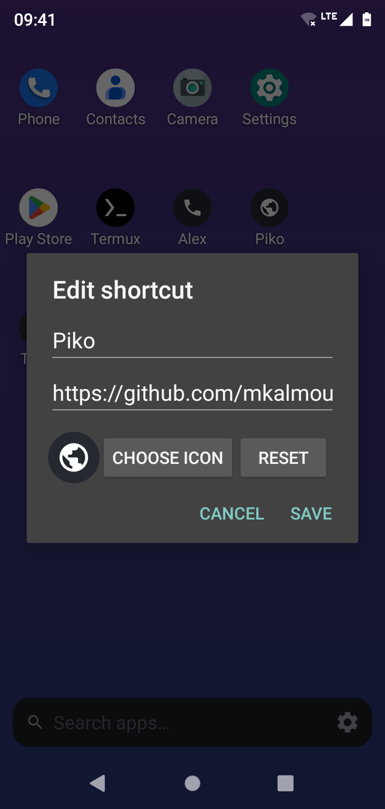
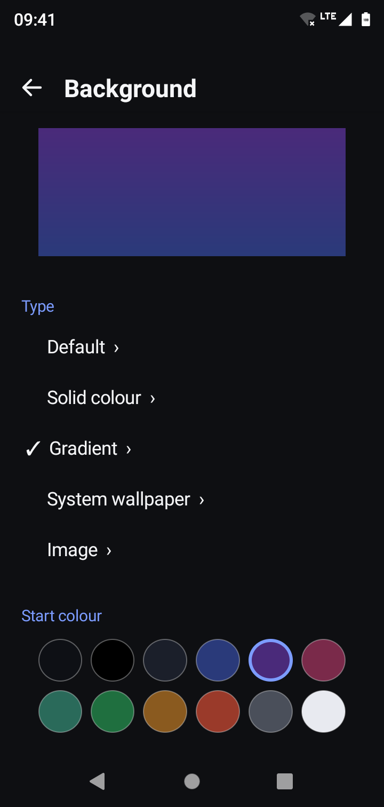
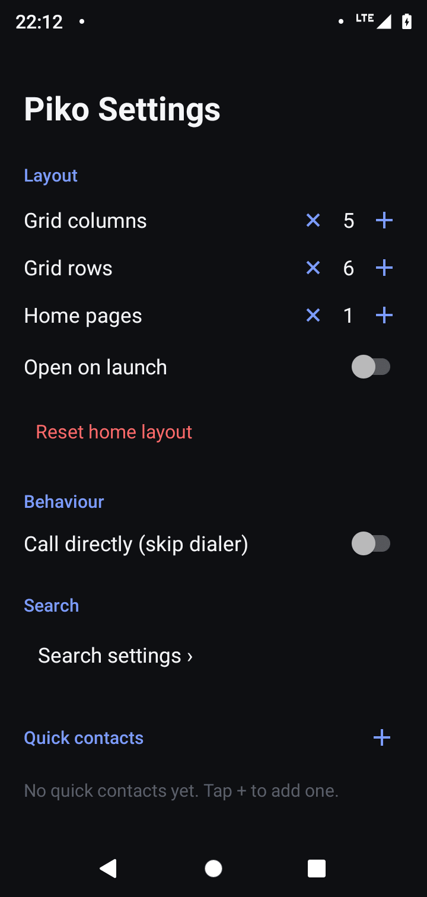
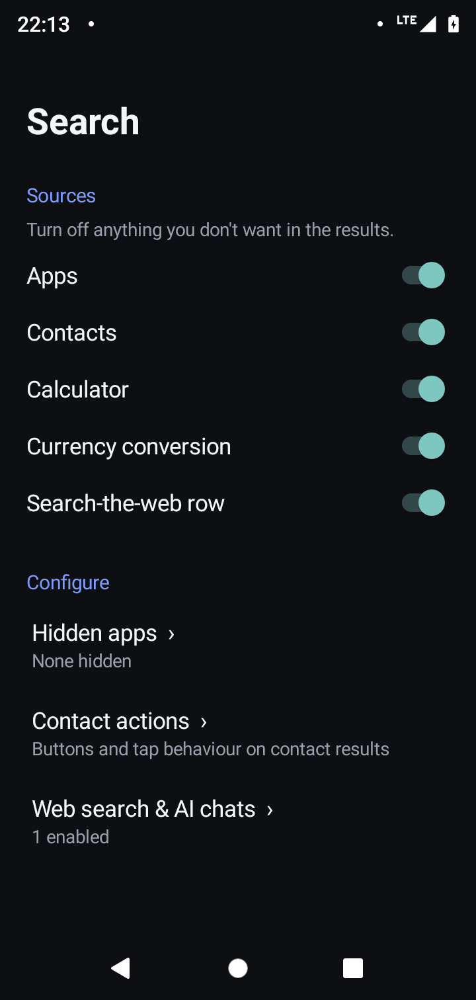
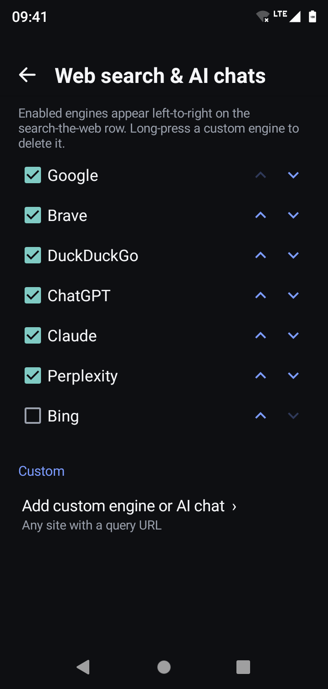
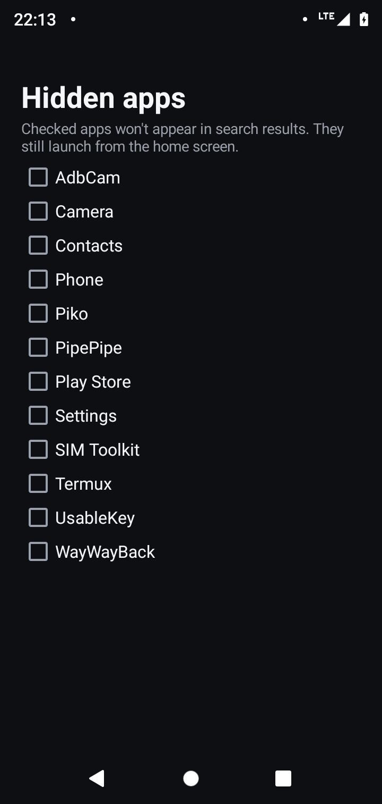
FAQ
How do I install Piko?
Download the APK from the latest release, install it, then press Home and choose Piko as your default launcher.
Which Android versions are supported?
Android 5.0 (API 21) and newer. Features that need a newer Android, such as shortcuts pinned by other apps, are disabled on older versions.
Does Piko collect any data?
No. Everything stays on your device. The only network request Piko makes itself is for currency rates. See the privacy notes.
Is the contacts permission required?
No. Decline it and apps, calculator, currency and web search still work.
Can apps add shortcuts to Piko?
Yes, once Piko is your default launcher. If an app was open before you switched, restart it once so it re-checks.
Can I use ChatGPT, Claude or my own search engine?
Yes. Enable the built-in engines or add any site that accepts a query in its URL.